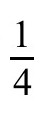
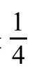
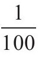
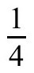
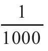

决定空间有什么物质存在的定律是否与空间的性质有关？爱因斯坦证明物质的存在通过扭曲空间（和时间）影响几何结构。这在当时看来十分激进。但在当今的理论中，空间和物质的本质是交织在一起的，比爱因斯坦想象的要深刻得多。是的，在此处的物质可以稍微将空间弯曲，如果物质密度很大的话，就会将空间弯曲更大的程度。但是，在新物理学中，空间对物质的影响将更加强烈。根据这些理论，空间的最基本性质——比如维数——决定了自然规律以及构成我们宇宙的物质和能量的性质。空间作为宇宙的容器，又成为空间自身的仲裁者。
根据弦论，空间存在额外的维度，这维度是如此之小，以至于该理论所有能变化的部分都无法被现有的实验观测到（尽管间接观测可能很快会出现）。尽管观测效应可能很小，但它们和它们的拓扑结构——即与是否改变形状有关的性质，比如平面、球体、扭结或圈环，它们决定了空间里有什么存在（就像你和我一样）。把这些圆环的维度扭成结，接着——噗！——电子（和人类）就被扔出可存在的范围。
还有更多：弦论，尽管依然很难理解，但已经演变成另一种理论，即M理论。我们对此知之甚少，但它似乎正引导我们得出这样的结论：空间和时间实际上并不存在，只是更复杂事物的一种近似。
在这一刻你可能会想做一些事，要么是大笑，要么是嘲笑那些浪费纳税人血汗钱的学者们。我们将看到，多年来，大多数物理学家都有同样的反应。一些物理学家现在依然如此。但对于那些研究基本粒子理论的人而言，弦论和M理论虽然还不太严格，却十分重要。不论这些理论，或者后来衍生出的理论，会不会被证明是某种“终极理论”，但它们都已经改变了数学领域和物理学领域。
随着弦论的出现，物理学已经转向了它的伙伴——数学，这门自希尔伯特以来就建立在规则而不是现实之上的学科。到目前为止，弦理论和M理论并不像从前一样，为新的物理洞见或实验数据所驱动，而是由他们自身的数学结构推演出来的。它不为成功预测出新粒子而欢呼，而是为了让新发现的理论描述现有的粒子。物理学家已经意识到，这类发现是常规科学研究过程的某种转变，因而为它们创造了新的科学术语——后见之明（postdiction）。在对科学方法进行奇异的扭转后，理论本身已成为（头脑）实验的主体；实验主义者成为理论家。爱德华·威腾（Edward Witten）今天是该理论的主要支持者，他没有获得诺贝尔奖，而是获得了一枚菲尔兹奖奖章，这是数学领域与诺贝尔奖同等级别的奖项。就像几何结构和物质可以互相影响一样，二者的研究方法也是如此。威腾甚至更进一步说，弦论最终会发展为几何学的一个新的分支。1
这场革命与之前不同，不仅重构了空间的概念，还重构了研究空间的方式。然而，这场革命不同于之前革命的一个重要方面在于：我们仍在其间的迷雾之中，没有人真正知道它将如何发展。
故事发生于1981年。约翰·施瓦兹（John Schwarz）在走廊里听到一个熟悉的声音。“嘿，施瓦兹，你今天在几个维度里呀？”这是费曼的声音，他自己还没有被“发现”处于哪一个维度，当时他热衷于探索纯粹物理世界。费曼认为弦论是很难解决的问题。施瓦茨对此并不介意。他习惯了不被认真对待。
那年的某一天，一名研究生向一位名叫姆沃迪瑙（Mlodinow）的年轻教师介绍了施瓦兹。施瓦兹走后，那位学生摇了摇头。“他是位讲师，不是真正的教授。在这里9年了还没拿到终身教职。”一声窃笑。“他在26个维度里研究这个疯狂的理论。”实际上，这名学生对最后一部分的看法是错误的。最初这是一个有26维的理论，但那时已经下降到10维。尽管如此，它似乎还是太多了。
多年来，这个理论一直被其他“尴尬”所困扰，从一个物理学家的角度来说，它作出的预言似乎与现实毫无关系：负概率、虚质量、超光速粒子，诸如此类。尽管如此，在事业付出巨大代价的情况下，施瓦兹依然坚持这一理论。
阿列克谢很喜欢看一部电影，关于一群高中生的故事，叫《10件我讨厌你的事》（Ten Things I Hate About You）。电影结束时，女主角站在全班面前，读了一首她讨厌她男朋友的10件事的诗，但这首诗其实是关于她有多爱他。很容易想象，约翰·施瓦兹一边诵读着这首诗，一边爱着他的理论，坚持他的理论，尽管有时是因为它可爱的小毛病。
施瓦兹在弦论中看到了一些几乎没有人看到的东西，本质上的数学之美让他觉得这不是巧合。即使这一理论很难发展，也没有使他气馁。他试图解决自爱因斯坦开始，就困扰着爱因斯坦和其他所有人的问题——协调量子理论和相对论。找到解决方案并不容易。
与相对论不同的是，普朗克发现能量的量子化后，过了几十年，第一个量子理论才出现。由于奥地利人欧文·薛定谔（Erwin Schrödinger）和德国人沃纳·海森伯（Werner Heisenberg）的努力，1925～1927年理论有了突破。每一个独立发现的——也许“发明”是一个更合适的词——优雅的理论，解释了如何用其他方程式来代替牛顿运动定律，这些方程式都涵盖了在过去几十年里被推导出的量子原理。这两种新理论分别被称为波动力学（wave mechanics）和矩阵力学（matrix mechanics）。就像狭义相对论一样，量子理论的结果不能从日常生活中直接显现出来，只能在非常小的世界中才可以。一开始，这两种理论不仅与相对论的关系不明确，而且彼此之间的关系也不明确。在数学上，它们的表现像他们的发现者一样与众不同。
想象海森伯其人，一个举止良好的德国人，西装和领带穿戴整整齐齐，书桌也井然有序。不久他就成为人们所形容的那样，从“单纯的民族主义者”转变为“温和的亲纳粹”，他将为德国的原子弹事业效力。在战争结束后，他被其他人嘲笑。海森伯的理论大量依赖于实验数据，并与物理学家马克斯·玻恩（Max Born）和后来的纳粹党突击队员帕斯卡尔·约尔当（Pascual Jordan）合作。2他们共同创造了一个包含了特殊物理规则的理论和那些物理学家们已经注意二十多年的模式。物理学家默里·盖尔曼（Murray Gell-Mann）3如此描述这一过程，“他们[从实验数据中]拼凑出来理论。他们的理论是这些规则的总和。”有一次玻恩正在度假时，他们从这些规则中重新发明了矩阵的乘法。他们不知道那是什么。当玻恩回来后，他一定会说，“但是，先生们，这是矩阵理论。”他们的物理学推演出了有效的数学结构。
想象薛定谔其人——物理学界的唐璜，他曾经写道：“从来没有一个女人和我或者想和我睡觉，因此，她也不会想和我一辈子生活在一起。”4因此有充足的理由认为，是海森伯，而不是薛定谔，提出了不确定性原理。
薛定谔对量子理论的研究更多地依赖于数学推理，而不是像海森伯那样依赖于实验数据。想象薛定谔认真的神情，带着一丝微笑，一团乱麻的头发让人想起爱因斯坦。他若有所思地在笔记本上潦草地书写着，像小学生一样。他制造噪声，不考虑任何礼节，他在每只耳朵上粘着一颗珍珠，以防止分心。但保持沉默并不是他滋养创造力时的所有需要。他不是在一个偏远的修道院创建波动力学的，而是在普林斯顿大学的数学家赫尔曼·外尔（Hermann Weyl）所说的“他生命中晚期的情爱爆发”时期5。
薛定谔在一场滑雪胜地的幽会中首次写下了他的波动方程式，当时他的妻子刚离开苏黎世。据说，这个神秘女人的陪伴让他在一整年里都受到刺激并疯狂地产出。这种合作通常不被认为是合作，他的论文没有列出任何合作者。这个特别的合作者的名字似乎永远消失了。
虽然薛定谔有更好的工作条件，但他的波动力学和海森伯的矩阵力学很快就被英国物理学家保罗·狄拉克（Paul Dirac）证明是等价的。他们各自的理论被赋予了一个中立的名称：量子力学（quantum mechanics）。狄拉克还扩展了量子力学，将狭义相对论原理包括在内（并在1932年和1933年因量子力学获得了诺贝尔奖）。狄拉克没有把广义相对论也纳入其中，他有充分的理由：这是做不到的。
爱因斯坦作为两种理论之父，看到了它们之间的明显冲突。虽然广义相对论修正了牛顿关于宇宙的大部分观点，但它仍然保留了牛顿的一个“经典”原则：确定性。给定一个系统的正确信息，无论是关于你的身体还是整个宇宙，牛顿的范式意味着你可以在原则上计算未来会发生的事件。但根据量子力学，这是不正确的。
这是爱因斯坦讨厌量子力学的唯一原因。他恨透了这个理论。他花了30年的时间寻找一种方法来推广他的广义相对论，将自然中所有的力都纳入其中，并且希望在这个过程中解释相对论和量子理论之间的冲突。他失败了。现在，在爱因斯坦去世30年后，约翰·施瓦兹认为他找到了答案。
量子力学中不确定性的来源是不确定性原理。根据这一原理，在牛顿定律描述的运动中被量化的系统特征无法被无限制地精确化。
阿列克谢最近兴奋于他听到的一个老笑话。一名修女，一位牧师，一位犹太教教士在打高尔夫。每当教士错过关键一击时，他习惯于大叫，“该死的上帝，我没打中！”打到第十七洞时，牧师为此感到很生气。教士承诺要克制自己，但是，当他错过下一个推杆时，他再次大喊：“该死的上帝，我没打中！”此时牧师警告说：“你若再诅咒，神必定杀死你。”在第十八洞时，教士又一次失误，同时他又骂了一遍。此时天暗了下来，风开始刮起，一道耀眼的闪电从天空击下。当硝烟散去时，惊恐的牧师和震惊的教士凝视着正在冒烟的修女遗体，被烧成一片酥脆。就在那时，从天上传来雷声，“该死的上帝，我没打中！”
阿列克谢说这个笑话很有趣，因为它侮辱了上帝——用自己的方式呈现出一个画面，一个有缺陷的神犯下和人类一样的错误。不完美的上帝或不完美的自然的概念，是让许多物理学家对量子力学感到困惑的地方。上帝无法确切地指明位置吗？
这种对自然决定论的限制让爱因斯坦说出了这样的名言：“[量子力学]理论产量颇丰，但它几乎无法让我们接近上帝的秘密。无论如何，我确信他不会掷骰子。”6如果这个笑话在爱因斯坦的时代就有了——而且很古老——那么爱因斯坦可能会咕哝着，“上帝无论何时何地都可以让一束闪电着陆。”
也许除了薛定谔与异性的关系之外，我们在生活中所遇到的一切都是不确定的。因此，人们可能会想，为什么表达一个明显是事实的原理需要用如此高级的名称？海森伯原理的不确定性是一种奇怪的不确定性。它是经典理论和量子理论之间的区别，是人的局限性和……嗯，上帝之间的区别。
给孩子做一个小测验：对还是错——在麦当劳，一个“

磅”的汉堡包的重量是否正好是
磅？孩子中的愤世嫉俗者可能会回答“错误”，用推理的方式来解释：一家每天销售4000万个汉堡包的公司，可以从每个汉堡中节省
磅来节省大量的肉类。但他们没有考虑系统误差：他们认为每一个
磅的汉堡都是准确的，不可能变成0.24磅。问题是，每一个麦当劳汉堡的重量都略有不同。区别不只是番茄酱有多少的问题。精细测量，你会发现每个汉堡都有不同的厚度，独特的形状，自身的个性特征——在微观尺度上。和人一样，没有两个汉堡是一样的。要用多少位小数才能测量出两个汉堡的重量差异呢？因为他们每年卖出超过10亿个汉堡，也就是109个，所以至少是9位小数才行。他们不太可能把名字改成0.250 000 000磅。
就像每个汉堡都是不同的一样，所有测量也是如此。你在执行测量时的动作，尺度的机械状态和物理状态，周围的气流，地球的局部地震活动，温度，湿度，气压，许多微小因素在每次重复测量时都有一些不同。如果区分得足够精细，那么重复测量的结果将永远不一致。
这并不是不确定性原理。
量子力学的不确定性原理进一步深入：它使某些特性形成互补配对，该配对具有一定的限制：你越能精确地测量一个特性，你在测量另一个特性时就越不精确。
根据量子理论，这些互补量的值在超出其限制精度时是不确定的，而不仅仅是限制在我们现有仪器的范围。
多年来，物理学家一直试图证明这是我们理论的局限，而不是自然界的局限。他们认为有一些确定的“隐藏变量”藏于某处，但我们不知道该如何测量。事实证明，我们可以通过测量来排除这些隐藏变量。1964年，美国物理学家约翰·贝尔（John Bell）解释了如何完成测量的步骤。71982年，实验得以进行：实验表明隐藏变量的提议并不正确。这个限制实际上是由物理定律造成的。
不确定原理的数学原理是这样的：两个互补元素的不确定度的乘积必须等于一个数字，叫普朗克常量。
位置成为不确定原理的互补对之一。其配对，动量，除去质量因子之后就成为物体的速度。这张“结婚证”详细说明了对配对的限制：一方的误差范围增加时，相反的另一方的误差范围就减小。这是一个没有例外的限制，像大多数天主教徒的婚姻，既没有对婚姻不忠也不离婚。将位置的误差范围和动量的误差范围相乘，其结果值不小于普朗克先生的常量。
普朗克常量是一个很小很小的数。否则，我们就会更早注意到量子效应（如果我们能在这样一个世界里存在的话）。在这里，形容词“很小（tiny）”的意思是“在十亿分之一的数量级上”。普朗克常量大约是十亿分之一的十亿分之一的十亿分之一，即10-27，这里单位为尔格秒。当然，普朗克常量的值取决于所使用的单位。1尔格秒是一个单位，其量级是我们在日常生活中可能遇到的大小。想象一下，一个1克的乒乓球放在桌子上。对我们大多数人来说，静止放置意味着速度为零。而实验物理学家明白，没有误差区域的测量是无意义的。她的论文不会用“球静止不动”，而更会使用像“球以不超过每秒1厘米的速度运动”这样的语言。在经典物理学中，这个问题可以得到很好解决。在量子力学中，即使是这种不太明显的精度也会造成差别：为能确定乒乓球的位置，必须要设定精度范围。
每秒1厘米的误差范围是很小且有限的精度，就像普朗克常量一样。数学计算告诉我们，我们可以把球的误差范围定在10-27厘米内。由于限制没有到达极限，一个熟悉的问题就出现了。但谁在意这个问题呢？直到19世纪末，没有人去做实验，或者更准确地说，没有人注意到这个问题。现在让我们把像乒乓球这样的东西换成电子。那个世纪末的物理学家们就是这么互换的。
还记得“除去质量因子之外”这句话吗？这在动量的定义中是如此傲慢。当时可能看起来不太明显，但它是量子效应在原子中而不是在乒乓球中十分显著的原因。
乒乓球的质量是1克。电子的质量是10-27克。与乒乓球不同的是，电子速度有1厘米/秒的误差，就会转化为10-27克·厘米/秒的动量误差区域，由于电子质量因数的原因，速度测量很草率，就意味着动量测量非常精确。这对你测量电子位置的能力来说并不是一个好兆头。
如果，对于乒乓球，你能确定一个电子的速度是正负1厘米/秒，该电子的位置就无法被精确定为正负1厘米或更好。这种精度限制不是很小很小很小，而是十分明显。这将使乒乓球运动变得相当粗略，但这恰恰是原子尺度上会发生的情况。对于原子中的电子，由于原子的限制，我们仅仅能确定它们在10-8厘米之内的某个地方，但被迫接受108厘米/秒的速度误差，这一不确定性几乎等于速度本身的值。
量子力学，如海森伯和薛定谔所表述的，非常成功地描述了原子物理学的现象，也很成功地描述了当时的核物理现象。但是当你将不确定性原理应用于引力时，正如爱因斯坦的理论所形容的那样，你就会得出一些关于空间几何的非常离奇的结论。
爱因斯坦在寻找统一场论的过程中几乎没有获得支持的一个原因是，广义相对论和量子力学之间的冲突，只有在考虑空间十分小的区域时才会显现出来，即便在今天，我们也没有希望直接观察它们。但欧几里得说，空间是由点构成的，几何学应该适用于任何我们所能想象到的小区域。如果理论在那里发生冲突，一定有什么问题，要么是其中一个理论出问题，要么是二者都出问题——要么是欧几里得几何有问题。
该问题发生的世界常被描述为“超显微的”（ultramicroscopic）。这个数量级对我们来说，意味着10-33厘米，称为普朗克长。为了能看得见该尺度，这意味着如果你将普朗克长度扩大到一个人类卵细胞的直径大小，一块典型的大理石就会膨胀到可观测宇宙的大小。普朗克长度真的很小。然而，与一个点相比，它的大小是不可估量的。
有一个晚上，在撰写这一章后，爱因斯坦和海森伯之间的冲突在作者的梦中表现出来。这一切都始于尼古拉，他成了爱因斯坦，走进来向我展示了他学前班活动手册上潦草地写下的一些理论……
在梦里争论一直持续，直到我心跳加速地醒来。（我把它当成是我不打算睡觉的信号，直到我写完了这一章。）将不确定性原理和广义相对论应用于空间中的小区域，将造成相对论理论本身的基本矛盾。谁是正确的，海森伯还是爱因斯坦？如果爱因斯坦是对的，那么量子理论就是错误的。但量子理论似乎并没有错。绝大多数实验和理论都是一致的。康奈尔大学的物理学家，量子电动力学的领导者之一木下东一郎（Toichiro Kinoshita），称其为“在地球上能被实验验证的最好理论，也许甚至在宇宙中也是如此，这取决于宇宙中有多少外星人。”8
如果量子理论是正确的，那么相对论一定是错的。它也取得了成功。但有一个区别。广义相对论的胜利主要在于对宏观现象的观察，比如经过太阳的光线或地球附近飞行的时钟。但广义相对论在小尺度的基本粒子上还没有经过测试。它们的质量实在是太小，无法测量引力的影响。出于这个原因，物理学家更喜欢质疑相对论的有效性，特别是爱因斯坦关于空间小区域近似平坦的假设。也许爱因斯坦的理论在超微的世界中必须加以修正。
如果普朗克在普朗克——爱因斯坦的辩论中真的胜利了，那么超微尺度的度规将剧烈波动，于是另一个更深层次的问题就出现了。超微尺度下的空间结构是什么？答案的关键似乎在费曼和其他人看来难以理解，这是施瓦兹继续研究的动力来源之一，但在他看来，这并不是一个缺陷，仅仅是他所钟爱的理论的一个特点。在超微的领域，似乎还有其他的维度，蜷缩在它们自己身上，如此微小，就像1899年的量子一样，至今还未被发现。它们是解决广义相对论的关键因素。几十年前，相对论的创造者也曾考虑过这种理论，但后来将其抛弃。
在爱因斯坦去世的前一天，他要求公布自己最新的关于统一场论的计算。他尝试了30年，却失败了，他想修改广义相对论，以便在其中加入对电磁力的描述。他想到的最有前景的方法之一是在1919年某天打开邮件的时候。这个想法不是来自于他自己，而是来自一个名叫西奥多·卡鲁扎（Theodor Kaluza）的贫困数学家的一封信。
爱因斯坦读了这个关于如何将电场力与引力结合在一起的建议。这个理论有一个很奇怪之处。爱因斯坦回信9说：“通过一个五维圆筒世界来得到[统一理论]的想法从未在我身上出现过……”一个五维的圆筒？为什么这个想法会出现在人身上？没有人知道卡鲁扎是如何得到他的想法的，但爱因斯坦回信说：“我非常喜欢你的想法。”回顾过去，卡鲁扎领先于他的时代，但在维度上有点吝啬。
正如我们所见，广义相对论用度规来描述物质对空间的影响，其分量——g因子——告诉你如何由坐标差异来测量相邻点之间的距离。g因子的数目取决于空间的维数。例如，在三维空间中有6个g因子。在平直空间中，距离=（x坐标之差）2+（y坐标之差）2+（z坐标之差）2，因此gxx，gyy和gzz各自等于1，以及对应的交叉项因子，gxy，gxz，和gyz各自等于零，这些项是不存在的。在广义相对论的四维非欧几里得空间中，有10个独立的g因子（考虑到像gxy=gyx这样的等式），所有这些都由爱因斯坦方程所描述。卡鲁扎开始意识到，如果你使用五个维度，就会有其他g因子与多出的维度相对应。
然后卡鲁扎问了这个问题：如果把爱因斯坦场方程从形式上推广到五个维度，会得到哪些额外的g因子？答案是惊人的：你得到了电磁场的麦克斯韦方程组！从第五维度开始，电磁学突然出现在引力理论中。爱因斯坦写道：“你的理论的统一形式令人震惊。”10
当然，解释这个作为物理电磁场的额外维度的度规需要一些理论工作。那么额外维度有什么奇异之处呢？卡鲁扎声称，它的长度是有限的。事实上，它是如此之小，以至于如果我们在其中轻轻摇晃，我们自己都不会注意到。不仅如此，卡鲁扎认为，新维度有着新的拓扑结构，其结构是一个圆而不是一条线，即，它是自我闭合的，或者说是“蜷起来的”（因此它没有终点，不像一条有限的线）。想象第五大道没有宽度，仅仅是一条线。在卡鲁扎的新维度中，十字路口将成为第五大道上长出的的圆圈。当然，十字路口每隔一段街区就会出现，但街道上的所有地方都有额外的维度。所以把新维度添加到一条线上并不能把它变成一根能长出圆圈的线，它将变成一个圆柱体，就像一个圆亭一样，一个非常薄的圆亭。
卡鲁扎的观点是，引力和电磁力是同一事物的组成部分，只是看起来不同，因为我们观察到的是在微小的第四维度上不可测运动的平均。爱因斯坦对卡鲁扎的理论另有想法，但后来改变了主意，帮助卡鲁扎在1921年发表了这一理论。
1926年，密歇根大学的助理教授奥斯卡·克莱因（Oskar Klein）独立构建了同样的理论，并进行了一些改进。一是他意识到，如果粒子在神秘的第五维度有一定的动量值，那么该理论只会导出粒子运动的正确方程。这些“允许”的动量值都是某种最小动量的倍数。如果像卡鲁扎那样，假设第五维度是闭合的，那么就可以用量子理论从最小动量计算出蜷缩的第五维度的“长度”。如果它出现在一个可观测的宏观尺度上，该理论就会陷入麻烦，因为我们从未观察过这个新维度。推导结果是10-30厘米。没有麻烦。它会被很好地隐藏起来。
卡鲁扎——克莱因理论暗示了一些东西，它是理论之间形式上的联系，而不是一个能立即产生新事物的结构。在接下来的几年里，物理学家们寻找新的预测结果，这些预测可能来自于这个理论，就像克莱因对新维度大小的推论一样。他们提出了新论证，似乎暗示他们可以用这个理论来预测电子的质量与电荷之比。但这种预测是很不准确的。挣扎于这一困难和第五维度的奇异预测之间，物理学家们失去了兴趣。爱因斯坦上一次考虑这一理论是在1938年。
卡鲁扎在爱因斯坦之前去世，从未有过进一步的成就。但他的新理论也让他获益颇丰。当他写信给爱因斯坦的时候，他已经33岁，并且作为一名在哥尼斯堡的编外讲师（类似于兼职教授），已经供养他的家庭10年了。他的薪水最适合用他所喜爱的数学来形容：每学期他得到5乘以x乘以y的德国马克（或者从技术上说是黄金马克），x是他班上的学生数目，y是他每周上课的小时数。对于一个每周上课5小时的10人班级来说，这个数字是每年500马克。1926年，爱因斯坦把这种生活条件称为困难户，他的说法是：“只有狗才应该那样生活。”11在爱因斯坦的帮助下，卡鲁扎在1929年最终获得了基尔大学（University of Kiel）的教授职位。1935年，他搬到了哥廷根，成为一名全职教授。他一直待在那里，直到19年后去世。直到19世纪70年代，可能有新维度的理论才再次受到重视。
谁知道灵感会何时到来？更难以知道的是它将出现在哪里。弦论的故事开始于地中海750英尺高的山上。这个小镇叫埃里切（Erice），位于西西里岛，是一个天气炎热，节奏缓慢的小镇，拥有狭窄的街道和古老的石板路。当泰勒斯在地球上漫游时，埃里切还是埃里切原先的样子。如今，该小镇主要因埃托雷·马约拉纳中心（Centro Ettore Majorana）而闻名，这是一个文化和科学中心，在那里，每年都会举行一系列大约持续一个星期的“暑期学校”，持续了几十年。埃托雷·马约拉纳学校是研究生、年轻教师与该领域领头人聚集在一起的地方，在这里举办他们领域前沿话题的讲座。
1967年的夏天，一个这样的前沿话题讨论了一种关于基本粒子理论的方法，称为S矩阵理论。来自以色列魏茨曼研究所的意大利研究生加布里尔·维尼齐亚诺（Gabriele Veneziano）12坐在观众席上，听着著名学者默里·盖尔曼的讲座。盖尔曼很快因为提出夸克的概念而获得了诺贝尔奖，夸克后来被认为是称为强子（包括质子和中子）的基本粒子族的内部组成部分。维尼齐亚诺当时获得的灵感将在几年内发展成为弦论。盖尔曼的演讲主题是：S矩阵数学结构的一些规则。
由海森伯发明的S矩阵方法由约翰·惠勒（John Wheeler）在1937年引入，并在20世纪60年代由伯克利物理学家杰弗里·丘（Geoffrey Chew）倡导。“S”代表“散射（scattering）”，因为这是物理学家研究基本粒子的主要方式：将它们加速到有巨大的能量，相互碰撞，然后观察飞出的残余物——就好比用设置车祸的办法来研究汽车。
在微小的碰撞中，你可能会撞开一些无聊的东西比如保险杠，但在赛车的速度下，如果实验者视线足够敏锐，便会看到那些紧紧拴在乘客座位上的螺母和螺栓向外飞出。不过，有一处很大的不同。在实验物理学中，把一辆雪弗兰汽车撞到福特汽车上，可能会炸出捷豹汽车的一部分。与汽车不同，基本粒子可以相互转化。
惠勒发展了S矩阵理论，实验数据也越来越多，但当时还没能成功描述粒子产生和湮没的量子理论，甚至没有量子电动力学。S矩阵是一个黑箱，输入碰撞粒子的种类、动量等信息，产生出同样类型的数据，但前提条件是没有产生新兴的粒子。
要构造S矩阵——也就是黑箱的内部结构——原则上你需要一个描述内部相互作用的理论。但是，即便没有理论，也要有一些关于S矩阵的性质，仅仅基于对称性和一些一般原理，比如要求与相对论的一致性。S矩阵方法的关键是看看你能在这些原则上走多远。
这种方法在20世纪50年代和60年代较为流行。在埃里切的讲座中，盖尔曼谈到了一些在强子碰撞中观察到的惊人规律——二象性。维尼齐亚诺想知道这些规律是否会在更普遍的情况下发生。他花了一年半的时间，但他终于意识到一点：他所寻求的S矩阵的所有数学性质，都能由一个简单的数学函数——欧拉贝塔函数所拥有。
维尼齐亚诺的理论被称为双共振模型，是一个惊人的发现。为什么复杂的S矩阵会以如此简单优美的形式出现呢？这是将来会定期出现在弦理论中的第一个数学奇迹，这是一个美丽的结果，它让施瓦兹相信，自己并不是在浪费生命去追求它。
维尼齐亚诺的结果是如此优雅，它激发了物理学家们提出一个明显是非S矩阵的问题：产生这个S矩阵的碰撞过程的细节是什么？黑箱里面是什么？如果他们想出来了，他们就能解释强子对撞时的内部结构，以及支配它们的力，即强作用力。
1970年，芝加哥大学的南部阳一郎（Yoichiro Nambu），尼尔斯·玻尔研究所的霍尔格·尼尔森（Holger Nielsen）和当时在叶史瓦大学（Yeshiva University）的李奥纳特·萨斯坎德（Leonard Susskind）回答了这个问题：不把基本粒子当成点，而是当成微小的振动弦。
人们是发现了一个理论还是发明了一个理论？物理学家们是像孩子一般打着手电筒在暮光下的公园里寻找真理的蛛丝马迹，还是在它们倒下之前试图建造更高的建筑？或者，事实上两个过程都有——就像盖尔曼谈论的二象性，或者粒子和波之间的关系？
很少有词语比发明（invent）或发现（discovery）更好的了，就如同有意编造（concoct）和偶然发现（stumble upon）。最初的弦论——被称为玻色子弦论（bosonic string theory）——无疑是一种编造。它是人造的，有许多不真实的特性，很明显地放在一起仅仅是为了再现维尼齐亚诺的洞察力。但南部等人也偶然发现了一些东西。他们发现弦论，就如同普朗克发现量子理论一样。他们都发现了一个想法——能级可以被量化，或者将粒子建模为弦——其意义和范围尚未被理解，而这需要数年才能发展成一个有意义的理论。他们也许已经发现了新的自然原理，也许仅仅是一个数学技巧。只有经过数年的努力才能确定下来。在量子理论的例子中，从普朗克到海森伯再到薛定谔都经过了25年的时间。弦论的发展已然超过了这可作为标准的时间。
在弦论发展前十多年，20世纪60年代末和50年代后期，杰弗里·丘（Geoffrey Chew）作为最有前途的物理学家之一，在一次会议上站了起来，宣称场论没有什么好处。丘说，基本粒子是不存在的。我们应该把粒子看作是由彼此组成的东西。他建议物理学家们寻找一个“一种粒子构建一切”的理论——秉持冷战精神，这一理论被称为“核民主”（nuclear democracy）。此外，丘不相信根据不同的力的性质发展不同理论的方法。他相信，如果物理学家仔细检查所有可能的S矩阵，他们会发现只有一个矩阵能与广义的物理和数学原理相一致。也就是说，他相信宇宙就是如此运作，因为这是唯一可能的方式。13
今天，我们知道丘强加的条件不足以确定其中的物理学。威腾称S矩阵理论为“一种方法，而不是理论”。14盖尔曼说它被夸大了，15这是他第一次在1956年纽约罗彻斯特的一次会议上发表演讲时给出的方法，只是取了一个浮夸的名字。尽管如此，盖尔曼说：“S矩阵方法是正确的，它至今仍被用于弦论，丘坚持这些美学是有充分理由的。”即使是今天的标准模型，尽管取得了成功，也并不漂亮。
这些问题始于1932年，当时人们发现了两个新的奇特粒子。一个是正电子，电子的反粒子。另一个是原子核的一个新成员，它很像质子，但不带电——中子。物理学家们不太愿意接受新粒子的可能性。其余解释都是有意编造。
狄拉克的理论预言了正电子，最初将其归为一种简化的质子（正电子与质子的电荷相同，但质量不到质子的

）。人们试图将中子解释为质子和电子紧紧抱在一起。但是，就像一个十几岁的孩子的父母一样，物理学家们很难坚持自己的立场。不久，物理学家们不仅承认了新粒子，还承认了反物质的概念和两种新的力——强力和弱力，它们在原子核内十分重要。到20世纪50年代，粒子加速器允许人们对几十个新粒子进行研究，中微子，μ介子，π介子，等等。J.罗伯特·奥本海默（J.Robert Oppenheimer）建议诺贝尔奖颁给没有发现新的“基本”粒子的物理学家16。恩里科·费米（Enrico Fermi）说：“如果我能记住所有这些粒子的名字，我就会成为植物学家。”17
物理学家们用量子场论来研究这些变化，来描述粒子是如何出现和消失的。量子力学被设计用来描述粒子如何相互作用，而没有描述它们如何被创造、破坏或相互转化。在量子场论中，宇宙中任何事物的相互作用都只有一种：把已知粒子变为“媒介粒子”（messenger particles）。根据场论，几个世纪以来物理学中被称为“力”的东西，仅仅是对其他粒子间的粒子交换的更高层次的描述。
想想两名篮球运动员在球场上奔跑，来回传球。他们就是上述问题中的粒子。他们之间的相互作用，无论使他们靠近或推开，都是由球，也就是媒介粒子所提供。对于电磁学来说，媒介粒子就是光子。在量子电动力学中，像电子和质子这样的带电粒子会通过交换光子感受到电磁力。而中微子这样的无电荷粒子之间则不会有光子交换。
第一个成功的量子场论是在20世纪40年代由费曼、朱利安·施温格（Julian Schwinger）和朝永振一郎（Sin-itiro Tomanaga）发展的电磁场的量子场论。20世纪70年代，人们建立了一个新的理论，将电磁场理论与弱力理论统一起来。很快，与量子电动力学类比，人们发明了强力的理论，其媒介粒子是胶子。总体上，这3种力的场论共同构成了标准模型。
如果你是植物学家，就会发现物理学家做了一件令人钦佩的工作。标准模型中的基本粒子的分类，虽然在预测能力上取胜，但并不优美。例如，相对于“媒介”的粒子，物质的基本粒子用族（family）来表示。每个族都有四个部分，类电子粒子，类中微子粒子，还有两个夸克。其中一个族包含普通的电子和中微子，以及构成我们熟悉的质子和中子的两个夸克。其他两个族的对应粒子只在质量上有差异，每个“奇异”族依次包含大量更重的粒子。标准模型反映了这种结构，但只是被纳入模型而没有相应解释。为什么有3个族？为什么每个族有4个成员？为什么它们的质量是这样的？标准模型对这些问题没有深入研究。
每个力的强度也没有解释，用一种称为耦合常数的数字进行编码。粒子对力的响应用荷量来表示，即电荷量的推广。通常，一个给定的粒子携带不止一种类型的荷——也就是说，它感受到不止一种类型的力。这些荷量也未经解释就被放入理论之中。
如果费米很难记住基本粒子的名字，那么标准模型只会使事情变得更糟。要记住它的方程，他必须记住19个未经推导的参数值。这些不是使毕达哥拉斯感到骄傲的良好的数字，而是讨厌的数字如卡比玻角（Cabibbo angle），和像1.166391×10-5这样的值（在GeV-2下的费米耦合常数）。18《创世记》说：“要有光：于是就有了光。”根据现代物理学，上帝还仔细地调整了精细结构常数，精确到1/137.035997650（加减十亿分之一）。
即便不谈及科学哲学，“基本理论”一词也似乎暗示着，数十名研究人员不应该耗费毕生精力测量19个“基本”参数，精确到小数点后7位。你想要拍拍那些理论家的肩膀，问：“你听说过一个叫托勒密的家伙吗？”“只要有足够的圆圈，一个聪明的科学家可以拟合任何数据。”
弦论家不认为该模型是基本的。他们希望有朝一日能够从他们的理论中推导出基本模型。就像S矩阵理论家，但不同于场论家，他们的目标不是确定输入的参数——甚至不是结构的参数，例如空间的维数。就像丘一样，他们的目标是找到一个完全由一般原理定义的理论。他们希望通过该理论能理解所有力的来源和强度，粒子的类型和性质，以及空间本身的结构。在他们的理论中，正如丘梦想的那样，一个粒子能适合所有的粒子。不同的是，在他们的理论中，粒子是一根弦。
这条弦不由任何东西组成，它们可以定义物质构成，这意味着它们不具备更精细的结构。然而一切事物都由弦组成。长度为10-33厘米，它们比我们能直接观测的范围小了1016倍。如果放在视力表上，它们可能是垂直的，水平的，沿着对角线的。但即使是用最精细的显微镜观察，今天的技术也依然不过关。“向下的？向上的？斜的？……对不起，博士，我看到的只是一堆点。”
这些弦因尺寸微小而隐藏起来，并不奇怪——毕竟，它们是理论上的，而不是被观测到的。但其隐藏程度只能用过度（overkill）来形容。多方面估计表明，直接探测到一根弦，在实验上所需的加速器大小将介于银河系大小和整个宇宙之间。也许一位在3000年时的历史学家挖掘出本书的残破复印本，可能会对这个估计感到好笑，因为那时我们可能已经学会像混合苦艾酒和伏特加（以恰到好处的比例）那样观测他们。与此同时，直接观察似乎是根本不可能的。
在量子力学中，波和粒子是同一现象的两方面。量子场论认为，物质粒子和能量粒子都是由不同量子场激发的。这在弦论中也成立，但弦论中只有一个场。所有的粒子都是由一种基本对象的振动所激发产生的：弦。
想象一根吉他弦，以适当的张力拉伸它。与静止的弦相对，弦上弹出音符被称为激励模式（excitation mode）。在声学中，它们被称为高次谐波（higher harmonics）。在弦论中，它们表现为不同的粒子。
毕达哥拉斯学派首次研究了乐音的数学和美学特性。他们发现，当你调一根弦时，它会因振动产生某种音调，或者频率，与弦的长度成反比。这个基本频率19来自于弦的中点的振动模式，该点也是最大振幅的位置。但弦也可以以这样的方式振动，中点不动，最大振幅发生在中点与两端之间的中点。这是你在按住弦的中点时的基本的振动模式。它是同一根弦上的两条等效波，即波长为原先的一半，频率是基频的两倍的振动。它被称为二次谐波（second harmonic），用音乐术语说，它比原先高了一个八度。
拨动一根弦也会产生振动，其形式是3条完全波，4条波，等等（但绝不会产生分数波，否则这将违背弦末端固定的条件）。这些都是高次谐波。例如，小提琴和钢琴上的音调的前6个泛音的振幅一般比其他乐器更强。另一方面，管风琴的较高和弦声音通常较差。正是高次谐波让乐器，以及基本粒子的族有了多样性。
弦论的弦不像吉他弦一样被束缚。它们可以是开放的，也可以是封闭的。它们可以在末端分开，重新连接或合并，形成一个环；或者合并然后分开，形成两个环。当一根弦分裂或连接时，其属性将改变——从远处看，它就像是一种新型的粒子。媒介粒子的交换实际上是时空中漂浮的弦的分裂和连接。
我们观察到的不同粒子仿佛是一个个音乐盒，粒子的性质就好比是我们听到它们演奏出的音符。根据演奏的音乐分类，似乎有许多不同的音乐盒。根据弦论，这些音乐盒都是完全相同的，不同之处不在于构成，而在于它们内部弦的振动方式。
例如，振动的能量取决于波长和振幅。单位长度内波峰和波谷越多，振幅越大，振动的能量就越大。我们从相对论中知道质量和能量是等价的，因此从黑箱外看，弦振动的能量越高，我们会认为该弦的质量越大，这一点并不奇怪。
这同样适用于除了质量以外的性质，例如各种类型的荷。为什么不呢？在场论中，粒子的质量就是一种荷——与引力相对应。根据弦论，自然界中的所有粒子，包括媒介粒子，其所有不同的频谱特性，都仅仅是不同的弦振动模式。
宇宙中粒子具有巨大的多样性和复杂性。弦的振动模式是否足够丰富，可以容纳宇宙的多样性？在欧几里得的世界里无法做到。
但是弦的振动模式能预测哪个粒子存在，以及弦的性质，很大程度上取决于弦振动的维数和维度的拓扑结构。这是空间性质和物质本身性质之间深层联系的来源；根据弦论，空间结构决定了基本粒子的物理性质和大自然中力的种类。在弦论中，只有3个空间维度是行不通的。正是额外维度精确的几何和拓扑结构，决定了弦论所能预测的关于基本粒子和力的理论。
一维的弦只能以一种方式振动——拉伸和压缩，这种振动称为纵向振动。在二维中，弦仍然可以以这种方式振动，但它有一种全新的振动形式——横向振动，其运动方向垂直于其长度延伸方向。这些本质上就是我们刚才讨论过的振动。在三维空间中，横向振动的方向可以旋转或螺旋上升——想象一个机灵鬼玩具（Slinky）即可[6]。维度越高，振动形式的复杂性就越高。
拓扑结构也会影响振动。拓扑学是一个很难定义的学科，但粗略地讲，它涉及曲面和空间与形状相关的那一部分性质，而非与度规（距离关系）或曲率相关。从拓扑学角度说，线段不同于圆，是因为它有两个端点，而圆没有。然而，圆与椭圆之间的区别并没有引起拓扑学家的兴趣——它只是曲率的问题。考虑这些区别的一种方法是：任何两种可以通过拉伸但不撕裂而相互转化的形状，都具有在拓扑学家看来相同的特性。
弦是如何受到空间拓扑结构的影响的？假设弦论只用了两个额外维度。由于弦论中的额外维度应该很小，想象一个“小”的二维空间——一个正方形或一个矩形，某个有限的平面。该空间有同一种类型的拓扑结构。现在想象把它卷成一个圆柱体。尽管直觉上可能看上去是弯曲的，但在几何上，圆柱体被认为像二维平面空间一样平坦。这意味着它的曲率是零：在飞机上画的任何图形都可以被卷起成为圆柱体，而不会扭曲所测量的任何两点之间的距离。但是圆柱体在连通性或拓扑结构上与平面不同。例如，在平面上，任何一个圆或其他简单闭合曲线都可以缩小到一个点，但不离开平面。在圆柱体上，有一些曲线是无法形成的，例如，任何绕着圆柱轴的曲线。这种类型的弦在圆柱形空间上的振动受到的约束与在平面上振动不同，所以在弦论中，一个宇宙会产生不同类型的粒子和力。圆柱与另一个形状——圆环，或称之为甜甜圈（donut），紧密相关。要从圆柱体中得到环面，连接圆柱体两端即可。但可能有更复杂的拓扑结构：例如，不形成有一个孔的圆环，而是形成有多个孔的圆环。每一种圆环都有不同的振动谱。我们添加的维度越多，可能的空间就越复杂，特别是如果我们允许空间不平坦，就更复杂。在所有这些不同的空间中，可能的振动模式又是不同的。各种类型的振动使弦论能够解释基本粒子和力的多样性——至少理论上是这样。
在这一点上，我们本可以很肯定地说，由于各种一致性要求，只有一种类型的空间能满足弦论的额外维度，并且，基本粒子的性质和相应空间的弦振动正符合我们观察到的自然。让美梦继续吧。不过，也有一些好消息。首先，并不是任何额外维度都会起作用。看起来起作用的维度必须有6个（我们稍后会回到这个点），且必须具有某些特性，比如像卡鲁扎理论中的额外维度那样蜷起来。1985年，物理学家们发现了具有这些特性的空间类型。它们被称为卡拉比——丘空间（或卡拉比——丘流形；毕竟，它们是有限的空间）。20正如人们所猜测的那样，6维的卡拉比——丘空间比一个巧克力甜甜圈要复杂得多。但它们确实有共同之处——都有一个孔。实际上，它们可能有各种各样的孔，甚至孔都是复杂的多维物体，但这些都是技术细节21。关键是：每个孔对应于一个族里的弦振动。因此，弦论预测，基本粒子也会以族的方式出现。令人震惊的是，这些基本粒子是实验观测事实的“衍生品”的例子之一，必须“手动”纳入标准模型，没有理论解释。这是好消息。
坏消息是有成千上万种已知类型的卡拉比——丘空间。虽然只有3个族的基本粒子，但大多数都超过了3个孔。为了进行计算，需要推导出标准模型宣称存在的粒子的性质，例如，它们的质量和电荷，物理学家们还需要知道哪些可能的空间符合条件。到目前为止，还没有人能够找到卡拉比——丘空间，它可以精确地描述物理世界，也就是我们所知道的标准模型，或者是一个基本的物理原理，可以作为选择一个空间而不是另一个空间的标准。有些人怀疑这种方法是否会真的得出结果。但是，批评的声音比刚开始时要少得多，而且要安静得多，而在当时，有许多年他们做弦论的研究就意味着事业上的衰亡。
当南部等人提出弦论时，它就有一些奇特性质。首先，他们的理论与相对论不一致，除非让一个不友好的因子[1-（D-2）/24]等于零。任何高中生都可以告诉你这个问题的答案：D=26。
但这仅仅是问题的开始，D在该方程中表示空间的维数。卡鲁扎的工作很快让人重新燃起兴趣，只是现在，他的5个维度还不会太多或太怪异。其实这还远远不够怪异。
这个理论还有其他问题。如上所述，当按照量子力学的规则计算某些过程发生的概率时，数学上得到了负数。该理论还预测了一些被称为超光速粒子的特殊粒子的存在，这些粒子的质量不是实数，而且比光传播得快。（爱因斯坦的理论并没有严格地禁止这一点；它只禁止粒子以光速运动。）而且还预测了其他一些粒子，从未被观测到。
如果当地的天气预报预测有50%的概率会有雷阵雨，随着雨落下，青蛙也从天上掉下来，你可能不会对他们的计算模型有太多信心。物理学家们也是如此持怀疑态度。但假设天气预报也预测了温度，并且结果是正确的。同样，玻色子弦和强子之间的行为匹配是如此有趣，不容忽视。
如果这一切看起来很笨拙，物理学家很快就会意识到该理论有另一个错误，而且对这个理论来说，这真的十分尴尬。在量子力学中，所有粒子都属于两种类型之一：玻色子和费米子。在技术层面上，玻色子和费米子的区别在于一种称为自旋的内部对称性。但实际上不同之处在于：没有两个费米子能占据相同的量子态。如果你正在构建，比如说，物质的原子，那将是一个很好的性质。这意味着原子中的电子并不都聚集于能量最低的状态。若是如此，所有元素中的电子就会倾向于保持在最低能量的状态。相反，元素周期表中的原子由不同外层电子状态一个接一个地填充，这导致不同的元素在物理和化学性质上的差异。玻色子没有这样的限制。因此，物质是由费米子构成的。媒介粒子与力的传递有关，它们是玻色子。但在玻色子弦论中，所有的粒子都是——猜猜是什么？——玻色子。
这就是施瓦茨首次攻击的弦论中的问题。这为他赢得了导师地位，并有机会留在一所顶尖大学，在那里即便人们不相信他，至少会听说他的理论。
1971年，佛罗里达大学的皮埃尔·雷蒙德（Pierre Ramond）通过发现一种叫做超对称的新对称性，将玻色子和费米子联系在一起，从而推导出费米子的弦论。接着，和安德烈·内沃（Andre Neveu）一起，施瓦茨开发了一种称为自旋弦论（spinning string theory）的理论，它包括了费米子和玻色子这两种类型的粒子，去除了超光速粒子，并把所需的维度从26维减少到10维。他们的工作被证明是弦论的一个重要转折点，也是施瓦茨的职业生涯的重要转折点。
盖尔曼当时在欧洲核子研究中心（CERN, the European Laboratory for Particle Physics）工作，22他说：“施瓦茨的论文一发表，我就雇佣了他。”他们甚至没有见过面。次年秋季，施瓦茨从普林斯顿搬到加州理工学院，施瓦茨刚刚在普林斯顿被免去了终身教职。虽然费曼把弦论当成和其他神奇的解决方案一样，认为它们会在几年内消失，但是盖尔曼和施瓦茨一样对它充满信心。“它一定对某些事物有好处，”他说，“我不知道是什么，但肯定是某些东西。”1974年，盖尔曼又带来了另一个弦论学家——约耳·谢尔克（Joel Scherk）。施瓦茨和谢尔克很快有了一项惊人的发现。
弦论讲的是一个粒子，具有胶子，即强作用力的媒介的性质。但令人为难的是它是一种额外的粒子——似乎没有任何关系的媒介型粒子。在施瓦茨和谢尔克的工作之前，弦的长度被假定为大约10-13厘米，约是强子的直径大小。但他们发现，如果你假设它小得多，比如10-33厘米，也就是普朗克长度，额外的媒介粒子恰好符合引力子的性质，即假定的引力的媒介粒子。弦论不仅仅是强子的理论——它包括了引力，也许还有弱电力！
但等等，难道我们还没在调和引力和量子力学导致的混乱和矛盾中吸取到一些教训吗？在施瓦茨和谢尔克的理论中，由于弦不是无穷小的点，而是具有有限长度的物体，因此在超微领域里的问题并不会出现。他们发现了他们认为是具有一致性的量子场理论，可以从中推导出爱因斯坦方程，但是，在超微尺度上，在避免广义相对论和量子力学之间的矛盾时，该理论呈现的方式是不同的。爱因斯坦在发表相对论时，曾预计会遭到攻击。施瓦茨和谢尔克预计他们的理论会让人们非常兴奋。
施瓦茨和谢尔克在世界各地巡回演讲。人们礼貌地鼓掌，然后无视他们的工作。如果一定要说感想，他们会说自己不相信。为了和这些“人”辩论，所需要的数学是（而且仍然是）极其困难和复杂的。“人们不想花精力来理解它，没有政客的认可，他们就不会做出努力。”23施瓦茨说道。
盖尔曼有资格成为这样的政客，但他自己在这方面做的研究很少。他与施瓦茨合写的几篇论文，施瓦茨笑着说，“都是我们最容易忘记的文章之一。”24加州理工学院没有把教授职位留给约翰·施瓦茨，只将他的研究职位进行一系列延期。“我无法给约翰找到一份正式的大学教职，”盖尔曼说，“人们对他持怀疑态度。”251976年，谢尔克和其他人展示了如何将超对称性纳入弦论中，最终创造了超弦理论。这似乎是另一个开创性的结果，但似乎没有人关心。他们更感兴趣的是一个叫做“超引力（super gravity）”的与之相互竞争的理论，也更喜欢无引力的传统量子场论——标准模型。标准模型将电磁力与弱核力强核力结合在一起，取得了一个又一个胜利，包括1983年在实验中造出W和Z玻色子，这是弱力的媒介粒子。
弦理论遭遇了一场漫长的低产期。没有人知道如何用这个理论做任何实际的计算。额外的维度和其他问题仍然存在。与此同时，约耳·谢尔克精神崩溃了，他被发现在巴黎的街道上爬行。他向费曼等物理学家发送了古怪而疯狂的电报。他仍然设法工作，至少在部分时间，这让他的医生和同事们十分惊讶。然后妻子和他分手了，妻子带着孩子们搬到了英国。1979年，谢尔克自杀，这是弦论家们的一大损失。在20世纪80年代早期，人们发现了弦论的新问题。施瓦茨似乎被困在一个死胡同里，前方什么也没有，只有穷途末路。
有人说，他像他的博士生导师杰弗里·丘一样作了一些“浪费时间”的努力。丘与施瓦茨的目标相似，他花了25年时间研究S矩阵理论。前几年他还有人陪伴；在后来的15年里，他几乎独自工作，就像施瓦茨一样，他偶尔会受到嘲笑。最后，丘放弃了他的梦想。回想起来，丘的努力并不是毫无意义的——施瓦茨说，“如果没有他，很难说会有后来的弦论。弦论是由S矩阵方法发展而来的。”26
在加州理工学院，盖尔曼自始至终是弦论的强大支持者。他说：“在加州理工学院有他们（施瓦茨和谢尔克），这让我感到非常自豪。”27“这是非常感人的。我有一种直觉。所以在加州理工学院，我持续发扬了自己保护濒危物种的天性。我在第三世界国家做了很多保护工作。我在加州理工学院也会如此。”1984年，施瓦茨取得了另一个突破，这次的工作是与迈克尔·格林（当时在伦敦玛丽皇后学院）做的。他们发现，在弦论中，某些可能导致异常的多余术语会奇迹般地相互抵消。该结果是在那年夏天在阿斯彭（Aspen）的一场研讨会上提出的，杰罗姆酒店以滑稽短剧的形式表演出来。它以施瓦茨在舞台上大叫说他发现了一套能解释一切的理论，被穿白大褂的人带下台而结束。短剧的讽刺幽默反映了他的预期——这一研究结果将被人们忽视。
但这一次，在施瓦茨和格林能够完成他们的成果之前，一个名叫爱德华·威腾的人打来电话。他从研讨会中的其他人那里听说了他们的谈话。施瓦茨很高兴有人对他的工作产生了新的兴趣。但威腾不仅仅是作为一位研究人员赢得了胜利。他是世界上最有影响力的物理学家和数学家。几个月后，威腾（当时在普林斯顿大学，现在和施瓦茨在加州理工学院）和他的同事们取得了一些新的重大成果，比如将识别到的卡拉比——丘空间作为蜷缩维度的候选者。这就是说服数百名物理学家开始研究弦论的全部原因。施瓦茨终于得到了他所需要的认可。
施瓦茨突然对其他顶尖大学产生了兴趣，渴望趁热打铁成为新科学家。盖尔曼最终决定为他争取终身教职。即便如此，这也不容易。一位行政人员评论道：“我们不知道这个人是否发明了切片面包，但即使他有，人们也会说他是在加州理工学院做的，所以我们不需要把他留在这里。”28但在12年半之后，施瓦茨确实得到了终身职位。这比卡鲁扎快了好几年。
今天，施瓦茨和格林的论文被定义为“第一次超弦革命”。威腾说：“如果没有约翰·施瓦茨，弦理论很可能已经灭绝了，也许会在21世纪某个时间被重新发现。”29但接力棒已经传过来了。10年后，威腾将会占据主导地位，并最终在弦论中策划自己的革命。
到20世纪90年代初，弦论已经冷却下来。几年前，《洛杉矶时报》（Los Angeles Times）甚至支持一名批评家的立场，30他质疑弦论家是否应该“由大学出钱雇，并被允许使易受影响的年轻学生走入邪路”。（如今，《洛杉矶时报》有希望能更贴近当地的专家，比如怎样在沃伦·比蒂和安妮特·贝宁之间采访。）有充分的理由让这种兴奋消退。弦论家安德鲁·施特罗明格（Andrew Strominger）哀叹道31：“有一些大问题。”部分原因是缺乏从理论上得到的更惊人的新预测。但又有了新的尴尬——每一种都和过去的一样糟糕。似乎有5种不同的弦理论。不是5个不同的卡拉比——丘候选者——只有5个候选者适用——而是5个基本不同的理论结构。套用施特罗明格的说法，有5种不同的自然理论是不优美的。32这低产期后来持续了10年。这是施瓦茨穿越的又一片漫长的沙漠。但这一次，他有大量的陪伴者一起在寻找乐土，还有一位先知带领他。
每一时期的物理学都有其领头人。在弦论之前的几十年里，是盖尔曼和费曼。在过去的几十年里，领头人一直是爱德华·威腾（Edward Witten）。哥伦比亚大学（Columbia University）的布莱恩·格林（Brian Greene）说：“我所做的每件事，如果我追溯其知识根源，我发现它们最后都到了威腾的脚下。”33我第一次听说威腾是在七十年代末，当时我是布兰迪斯大学物理学专业的学生，在那里他比我早了几届。我接受了几位教授的评论：“你很聪明，但你不是爱德华·威腾。”我想知道，上述教授会对他们的妻子说：“你很好，但是我的前女友真的，真的很好”吗？当我仔细考虑之后，我认为我可以想象他们这样说过。但我还是想知道，这位天才是谁？
令我懊恼的是，他的专业是历史，是我们物理学专业的人认为的非科学的领域，除了更多的阅读作业之外，只有高中的知识深度。更糟糕的是，他还没有上过一门物理课。显然，对这个“爱因斯坦”来说，他把没有希望超越我的物理，只视为一种爱好。
我很高兴地发现，威腾曾参加过1972年的麦戈文运动（McGovern campaign），这意味着他在反尼克松的问题上精神十分可嘉。他在“很好地利用时间”这一领域受到的挑战毫无胜算。而且，如果他真是个天才，乔治·麦戈文怎么会没有赢呢？但麦戈文在马萨诸塞州获得了胜利——他唯一获胜的州。这可能是因为威腾的努力吗？几年前，我发现并不是。麦戈文在退休时被一名记者跟踪，急于知道他对“世界上最聪明的人”的看法，他回答说自己不记得威腾。然后他依然同意了这个评估，他说，“嗯，他很聪明，因为他在1972年支持麦戈文，我以那个标准来评判每个人。”34
在布兰代斯大学毕业之后，威腾在普林斯顿大学攻读物理系研究生。他没有上过物理课程，也没有资格进入大学，但事实证明，普林斯顿大学有着一个特殊的入学项目，是专为那些注定是世界上最聪明的孩子们弄的。当我终于见到威腾的时候，我是伯克利的一名研究生，在伯克利接受我之前，他们毫无疑问已经审核了我的成绩和其他资格，仿佛用细密的梳子一项项筛选过去，这些资历都是从上真正的物理课程中获得的。
威腾原来是一个身材高大、瘦长、黑头发的家伙，戴着黑色塑料镜框眼镜。他热情认真，但人很好，说话轻声细语，你不得不斜着耳朵听他说话。（事实证明这是值得的。）那天他在谈话中间停了下来，显然是在深思。但他沉默了如此长时间，以至于人们开始鼓掌，就像在贝多芬的音乐会上无知地以为是最后一个乐章的结尾。威腾有点生气地告诉我们，他的交响乐还没有结束。
今天，威腾经常被比作爱因斯坦。可能有很多原因，但最重要的原因可能是那些做比较的人没有听说过其他的物理学家。这真是爱因斯坦传奇的诅咒——他已经变成了陈词滥调，人们以这个领域的爱因斯坦或那个领域的爱因斯坦闻名。如果成为物理学家中的凯迪拉克，你就会获得这些名号。爱因斯坦和威腾有一些表面上的相似之处。他们都是犹太人，在普林斯顿高等研究院待了几年，并且对以色列表现出强烈兴趣和被和平运动深深吸引。14岁时，威腾给编辑写信反对越南战争，35被当地报纸《巴尔的摩太阳报》发表，他还参与了以色列的和平组织。36
但如果必须做个比较，威腾的工作更像高斯而不是爱因斯坦。他不依赖任何一位老朋友向他解释现代几何，像高斯一样，威腾已经自己重新发明了它。也像高斯一样，他的工作对现代数学的发展方向产生了重大影响，而爱因斯坦的研究从未有这样的影响力。接着有一个对立面——威腾的（和其他人的）弦论方法，还有现在的M理论，是由数学的洞见所驱动的，而不像爱因斯坦由物理原理驱动。也许不是因为选择，而是因为历史上的意外：该理论是在偶然中发现的。物理学的新原理及其核心，是一种对于威腾来说“最快乐的思想”，如果它存在的话，还有待发现。
1995年3月，爱德华·威腾在南加州大学的弦论会议上发表了讲话。施瓦茨的超弦革命已经过去了11年，对许多人来说，弦论似乎正在慢慢瓦解。威腾的演讲改变了一切。他解释的是另一个数学奇迹：他声称5种不同的弦论只不过是同一种更宏大理论的不同近似形式，现在称之为M理论。观众中的物理学家都被击倒了。罗格斯大学的内森·塞伯格（Nathan Seiberg）是下一个发言人，他被威腾的讲话所惊倒，他评论说：“我应该成为一名卡车司机。”37
威腾的重大突破现在被称为第二次超弦革命。根据M理论，弦并不是真正的基本粒子，38而只是更广义对象的特例，该对象称为膜（branes），是membranes的简称。膜是弦的高维版本，弦是个一维的物体。例如，一个肥皂泡就是一个双膜。根据M理论，物理定律依赖于这些更复杂的实体的更复杂的振动。并且，在M理论中，有一个额外的蜷曲维度——这让维度总共有11个，而不是10个维度。但它最奇怪的一面是：在M理论中，空间和时间，在某些基本意义上，并不存在。
M理论看来有一种性质，即我们认为的位置和时间，即弦或膜的坐标，是被称为矩阵的一列列数组。只有在近似意义上，当弦相距很远时（但仍接近于日常生活的尺度），该矩阵才能近似于坐标，因为此时矩阵的所有对角元素都相等，非对角元素趋近于零。这是自欧几里得以来空间概念最深刻的变化。
威腾曾说M理论代表了“神秘，魔法或矩阵，我最喜欢的三个词。”39最近，他又加上了“黑暗（murky）”这个词，40想必这不是一个他最喜欢的词。M理论比弦理论更难理解。没有人知道它会推导出什么样的方程，更不用说如何估计近似解了。事实上，我们对此一无所知，除了它似乎存在——这是一种更宏大的理论——5种弦理论只不过是它各种不同的近似形式。然而M理论的思想已经有一些最引人注目的暗示，那就是弦理论有一些东西：与黑洞物理有关的预测。41
黑洞是广义相对论预言的现象之一。其特征是它们是黑色的（对于物理学家而言，这意味着没有光或辐射可以逃脱它们）。1974年，斯蒂芬·霍金说，“啊啊啊……错误的答案！”如果考虑量子力学定律，人们被迫得出结论，黑洞并不是纯黑的。这是因为，由于不确定性原理，真空并不是真正空的；它充满了成对的粒子和反粒子，它们存在于最微小的瞬间，然后将彼此湮灭。根据霍金非常复杂的计算，当这种情况发生在黑洞外的空间时，黑洞可以吸收一对粒子中的一个，将另一粒子射向太空，并以辐射形式被观测到。因此，黑洞是会发光的。这也意味着黑洞的温度非零，就像从煤炭中发出的光亮表明它有一定量的热量。不幸的是，一个典型黑洞的温度不到百万分之一度，远不及天文学家能观测到的温度。但对于物理学家来说，认识到黑洞有温度将会推出一个非常惊人的结论。如果黑洞有温度，就可以有一个叫做熵的东西，事实上，黑洞的熵值是一个很大的数字，在本书的正文中要占据一行以上的位置。
熵是系统中无序程度的量度。如果已知一个系统的内部结构，你可以通过计算内部可能存在的状态数来得到熵值：状态越多，熵越高。例如，如果阿列克谢的卧室杂乱不堪，有许多可以到达的状态——仓鼠可能在这里，一堆脏衣服在那里，其他地方有旧漫画书，或者所有的物品都可以重新排列，形成一个不同的“状态”。房间里的垃圾越多，可能的状态会越多（与流行的观念相反，高熵的情形与任何特定的整洁或混乱的排列无关，只是系统可能有的状态的总数量较高）。但是，如果他的房间是空的，它只有一个状态可以达到——没有什么可以重新排列的——它的熵将是零。在霍金之前，人们认为黑洞没有内部结构，就像一个空房间。但现在看来，他们就像是阿列克谢的真实房间。如果霍金问我，我可以很明确地这样说：我一直告诉阿列克谢，他的房间就像一个黑洞。
物理学家们对霍金的结果困惑了20年。将单独的相对论和量子理论结合起来是件棘手的事。这个熵所对应的黑洞的所有状态有哪些？没有人知道。1996年，安德鲁·施特罗明格和卡朗·瓦法（Cumrun Vafa）发表了一篇精彩的计算：利用M理论的思想，计算表明你可以从膜上创造出某种类型的（理论）黑洞；对于这些黑洞，这些状态是膜态（brane states），你可以数出来。他们以这种方式计算的熵与霍金使用完全不同的方法所预测的熵一致。
这惊人的证据表明M理论是正确的，但仍然只是另一个后见之明。那些恼人的实验主义者坚持要提醒我们，理论需要来自现实世界的证实。M理论的实验证据目前存在于两个领域。一是未来10年可能发现的超对称粒子。这可能会在位于日内瓦的欧洲核子研究中心的大型强子对撞机（Large Hadron Collider, LHC）中发现。42另一项检验则是寻找引力定律的偏离。43根据牛顿理论，在这个尺度上，同样适用于爱因斯坦理论，两个实验室大小的物体应该相互吸引，其力的大小与它们距离的平方的倒数成正比——让它们之间的距离减半，其吸引力就会变成4倍。但是，根据额外维度的性质，当两物体非常接近的时候，它们的吸引力就会更快增加，这在M理论中是可能的。尽管物理学家们研究其他力的行为已经把尺度降低到接近10-17厘米的范围，但他们到目前为止只在大于1厘米的距离中研究了引力的行为。44斯坦福大学和科罗拉多大学波尔得分校的研究人员目前正在进行实验，使用“桌面（desk-top）”技术来测试较小距离的引力。
施瓦茨并不担心。他说：“我相信我们已经找到了一种独特的数学结构，它始终能将量子力学和广义相对论结合在一起。所以它几乎肯定是正确的。因此，即使我期待找到超对称粒子，如果超对称是不存在的，我也不会放弃这一理论。”45
大自然以隐藏的秩序进化。数学则揭示了这种秩序。M理论会是将来大学物理课程中优美的教科书理论，还是科学史上被称为“死胡同”的一条脚注？施瓦茨是否是下一个奥雷斯姆，而威腾成为新时代的笛卡儿，或者他们是否一起扮演了洛伦兹的角色，用不存在的以太建立了一个没有希望的机械理论，这些尚没有定论。作为一个年轻的科学家，施瓦茨只知道这个理论太美了，很难不会对世界有什么好处。今天，整整一代的研究人员都在观察大自然，观察他的琴弦。很难再以旧的方式看待这个世界了。